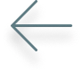

N. 04
GRUNDLÆGGENDE ANIMATION


DESIGN:
I dette tema lærte jeg at arbejde i programmerne audition og illustrator. Her lærte jeg blandt andet at designe ui og spil elementer. Derudover lærte jeg om perspektiver, baggrundsdesigns, kontraster og rule of thirds. Undervisningen startede med skitseringsteknikker, idegenerering teknikker og paperprototype.
FRONT END:
Her lærte jeg at lave css animationer. Jeg kom også mere i dybden med javascript. Jeg lærte om metoder som addClass/removeClass, load, click, animationend, animationiteration, if-else og math.random.
